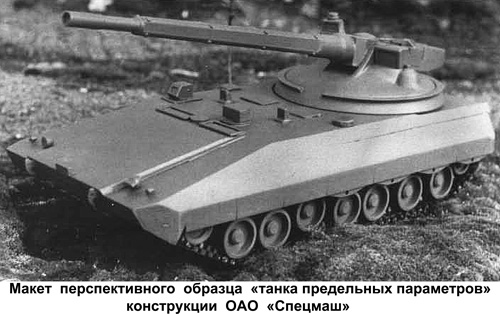
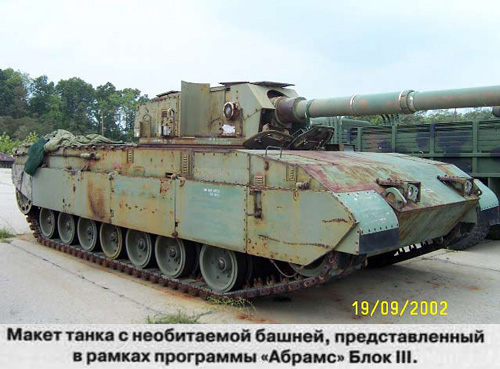
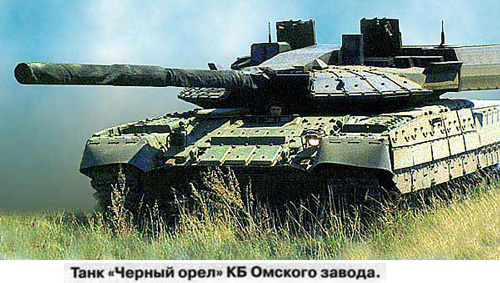
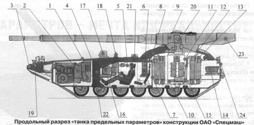
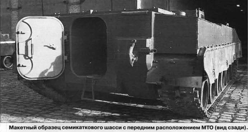
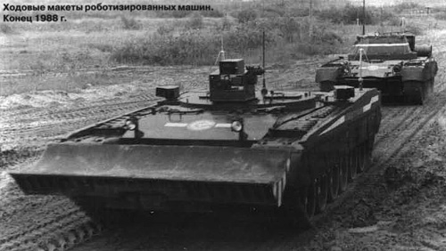
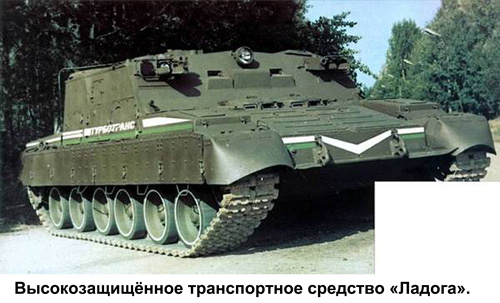
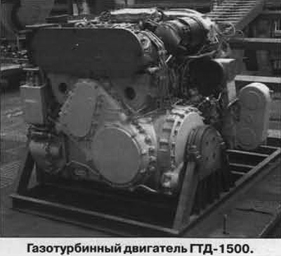

Танк был и, видимо, надолго останется современным оружием благодаря возможности сочетать в себе такие, казалось бы, противоречивые качества, необходимые для боевой работы, как высокая подвижность, мощное вооружение и надежная защита его экипажа. Танк постоянно совершенствуется, а накопленный опыт и новые технологии предопределяют появление боевых свойств и достижения технического уровня, казавшихся совсем недавно мифом или несбыточной мечтой. Поэтому вновь и вновь приходится возвращаться к теме «перспективного танка».
В обозримом будущем альтернативы танку, как боевой машине, способной стать основным боевым средством сухопутных войск, пока нет. Перспективный танк будет представлять собой, по сути, боевую систему повышенных интеллектуальных возможностей, средство разведки и анализа полученных данных, выбора приоритетов на поле боя, а также мощное оружие, способное уничтожать бронеобьекты противника и успешно взаимодействовать с другими комплексами вооружений.
В то же время, учитывая экономическую целесообразность, основные танкостроительные державы делают сегодня ставку на модернизацию бронетанковой военной техники, которая дает возможность достичь обновленных боевых характеристик. Беда в том, что такой путь короток, запас по модернизации быстро иссякает. Поэтому необходим качественный рывок, принципиально новые решения, чтобы соответствовать требованиям XXI века.
Известно, что родина танкостроения — Великобритания — пока не блещет инициативами в проектировании перспективных танков. В Германии много разговоров о бронированной платформе NGP, но пока не видно опытных образцов, а модернизация «Леопардов», надо полагать, вполне устраивает последователей Гудериана.
Как всегда активен Пентагон: появляются опытные образцы, проникают в печать сведения о фантастических возможностях боевой системы FCS. Ставка делается на создание комплекса приборов обнаружения и наведения высокоточного оружия, использующих данные спутников радиолокационной и оптической разведки, беспилотных летательных аппаратов с инфракрасными камерами. Утверждается, что перспективный танк получит космическую навигацию и еще массу «наворотов» XXI века — новейшую оптико-электронику, выполненную по нанотехнологиям.
Подвижность такого танка обеспечит комплексная энергетическая установка (с ГТД и электрогенератором), а ведущее колесо ходовой части станет колесом-электромотором. В этом случае скорость 100 км/ч станет реальностью. Высокая энерговооруженность позволит применить электромагнитную пушку с начальной скоростью 7 км/с (это почти первая космическая скорость). Не исключается и использование обычной пушки повышенного могущества для поражения целей на максимальных дистанциях с большой вероятностью.
Компоновка перспективной машины рассчитана на то, что экипаж будет находиться внутри бронированного корпуса, а ведение огня планируется обеспечить при помощи аппаратуры дистанционного управления.
По некоторым данным, масса танка нового поколения может составить около 40 т, общая высота — 1,6–2 м, ширина — 3,4 м. Экипаж состоит из двух человек. Реальная картина боя будет отображаться на щитке шлема, а круговое наблюдение (днем и ночью) — осуществляться с помощью телевизионной и теплоеизионной камер. Разумеется, машина будет иметь систему опознавания «свой-чужой».
Не лишним будет напомнить о работах фирмы «Дженерал Дайнемикс Лэнд Системз» по совершенствованию конструкции танка «Абрамс» в рамках программы Block III. В одном из вариантов этой уже закрытой программы предполагалась установка необитаемой башни, оснащенной дистанционно управляемым орудием — гладкоствольной пушкой калибра 140 мм с автоматическим заряжанием (программа ATACS). Дульная энергия ее снаряда должна была быть в 2 раза больше, чем у стандартной 120-мм пушки М-256, устанавливаемой на танках М1А1 иМ1А2. Предусмотрена объединенная система силовой установки (ALPS), гидропневматическая подвеска, легкая гусеница. Экипаж (3 человека) размещается в корпусе; механизм подачи боеприпасов (фирма «Локхид Мартин») — в нише. Выстрел — раздельного заряжания (аналогично нашей схеме); скорострельность — до 12 выстр./мин.
Справедливости ради надо сказать, что, по мнению многих экспертов, танк нового поколения — все же очень далекая перспектива. Реальностью может стать немецкая универсальная модель, чем-то напоминающая российский перспективный танк — так называемый «Т-95» (созданный нижнетагильским танковым КБ), официального представления которого мы ждем уже давно.
К большому сожалению, ожидание новых образцов отечественной бронетанковой техники действительно слишком затянулось. Но на данный момент только «Т-95» оказался единственным перспективным танком, доведенным до этапа испытаний (нельзя не выразить искреннее уважение моим коллегам из УКБТМ).
Обратимся к истории вопроса. В конце 1950-х гг. выдающийся конструктор харьковского КБ Александр Александрович Морозов создал Т-64 — машину нового поколения, ставшую прообразом всех советских танков, разработанных позднее в Ленинграде, Нижнем Тагиле и Харькове. Но время шло, менялись требования к образцам бронетанковой техники.
В начале 1980-х гг. в Харькове начались работы по теме «Молот», определившей разработку перспективного танка. Техническое задание подразумевало создание гусеничной базы, на основе которой можно строить самоходные артустановки, зенитные ракетные комплексы, инженерные, санитарные и другие машины. Аналогичные исследования велись и в других танковых КБ страны.
Харьковчане тогда чуда не сотворили. Созданный ими «Объект 477» оказался сложным и неудачным: экипаж вновь был «заперт» среди снарядов, а автомат заряжания отличался большими габаритами. Не останавливаясь на подробностях конструкции этой машины, можно констатировать — провал стал очевидным.
Во второй половине 1980-х гг. разработали свой новый танк омичи: видимо, на западный манер, они назвали его «Черным орлом», так и не объяснив, почему орел и почему черный. Может, для устрашения супостатов?
Но, по сути, это был классический ленинградский Т-80, который серийно выпускался в Омске, с башней увеличенных размеров, которую скрыли от досужих журналистов маскировочной сеткой. Башню выдавали за «ноу-хау» за счет пушки, вроде бы, повышенного калибра, вынесенной за башню кормовой ниши, похожей на «западную», где, как отмечалось в СМИ, расположен боекомплект, отделенный от экипажа, и новая система автоматического заряжания. Но дальше странного показа «Черного орла» дело не пошло. Кажется, сегодня об этой машине совсем забыли.
Прежде чем рассказать о ленинградских разработках по теме перспективного танка, я хотел бы обратить внимание на заголовок статьи: родился он не случайно. Николай Федорович Шашмурин, один из старейшин КБ танков Кировского завода (проработавший здесь с 1932 по 1976 г.), в 1969 г. закончил работу над диссертацией (по совокупности трудов), посвященной развитию отечественного танкостроения. Вскоре он защитил ее в Бронетанковой академии, заслуженно став кандидатом технических наук. Лейтмотивом этой большой работы, которой он посвятил всю свою жизнь, стала концепция развития отечественного танкостроения в виде разработки «танка предельных параметров» (ТПП). Это был ответ на отказ политической линии Н.С Хрущева от производства и конструирования тяжелых танков, которыми с довоенных времен занималось КБ Кировского завода и сам Н.Ф. Шашмурин.
Квинтэссенция его идеи основывается в двух основополагающих тезисах:
во-первых, необходимы одновременные разработка и сосуществование двух типов танков — основного (он же массовый и невысокой стоимости) и танка предельных параметров (мелкосерийного, с качественно иным уровнем тактико-технических характеристик).
во-вторых, в ТПП должны постоянно внедряться последние достижения и разработки научных организаций, которые по мере апробации и оценки могут переноситься и в основной танк.
У этой концепции есть свои сторонники и противники. Существует даже небесспорное мнение, что сегодня — поскольку нигде в мире не существует крупного серийного производства — машины танкопроизводящих стран, в принципе, и есть ТПП. Вот что писал Н.Ф. Шашмурин в своей работе «К вопросу о развитии отечественного танкостроения (по работам Кировского завода)»:
«Существующие представления по однотипажности танков, имеется ввиду, что современный основной танк якобы является результатом слияния прежних средних и тяжелых танков при преимущественном влиянии средних, разбавленные понятием возможности создания танка в весе среднего с параметрами тяжелого, исполняемого необычными компоновочными приемами (например, объекты 282, 286, 287, 288, 775 и д.р.) являются, по меньшей мере, заблуждением. Более чем достаточно оснований имеется для утверждения, что проверенные всей предшествующей историей и основанные на объективных условиях эксплуатации (дороги, мосты, железнодорожные перевозки, способы и средства доставки и пр.) приемлемое значение весовой характеристики тяжелого танка в сочетании с существующими научно-техническими возможностями при создании отдельных систем и узлов, позволяющих получить предельное развитие боевых свойств новыми компоновочными средствами, дает возможность найти искомое решения для танка предельных параметров. Условимся так называть бывший тяжелый танк, а в перспективе именно этот тип танка послужит основой для решения задачи — создание универсального танка».
Уже в те годы Николай Федорович не исключал и мелкосерийного производства только «танка предельных параметров» для внутренних нужд страны (при благополучной политической обстановке). А это было время, когда три завода СССР поставили на поток танки Т-64, Т-72 и Т-80.
Отметим, что за почти столетнюю историю существования танк превратился в высокозащищенный комплекс эффективного оружия, позволивший совершать и длительные марши, и стремительные броски. Как выросли его основные показатели, скажем, на примере отечественных машин?
В извечном противостоянии «снаряд-броня» защита все более совершенствуется, приобретая качества «активности», многослойности, «самозащищенности» и т.д. В то же время снаряд становится все более «умным», точным и могущественным, получает все более «длинную руку». За годы развития отечественного танкостроения калибр танковой пушки увеличился более чем в 3,5 раза, хотя дело, конечно, не только в калибре. В то же время росла и «защищенность». Достаточно сказать, что масса танка увеличилась более чем в 6,5 раз — хотя нельзя отнести всю массу танка к весу его брони, но все же у современных танков это около 50% массы.
Несколько выбивается из «трех китов» танкостроения показатель подвижности, определяемый, прежде всего, двигателем. Его мощность выросла в 37 раз (с 33,5 до 1250 л.с. у Т-80У). Но не будем спешить — важнейшим показателем подвижности является удельная мощность, т.е. мощность, отнесенная к массе машины. По этому показателю наблюдается рост всего в 6 раз. Приходится констатировать, что все три составляющие: огонь, маневр, защита шли нога в ногу.
Если проследить тенденции, например, по мощности двигателя и максимальной скорости движения танков зарубежных танкостроителей, станет очевидно, что прогресс не остановить и приоритеты здесь сравнимы с авиацией, где лозунг «выше, дальше, быстрее» является и сейчас прописной истиной. Правда, есть еще «специалисты» танкостроения, утверждающие, что повышать скорость танка не нужно, что она вредна, можно и столкнуться на марше, и покалечиться. Читатель, полагаю, прокомментирует сам это утверждение, особенно если вспомнит нашего предка А.В. Суворова.
Так каким же в итоге видится ТПП — перспективный танк следующего поколения?
Ответ, казалось бы, лежит на поверхности. Можно позаимствовать примеры из той же авиации — отрасли «оборонки», наиболее чутко реагирующей на изменения. А именно: взять помощнее пушку и двигатель, «покрепче» броню. Добавим к этому: получше связь, поменьше стоимость и, как говорится, вперед. Но все оказывается сложнее.
В этой связи вспоминается содержательные и интересные беседы в апреле 2001 г. с настоящим знатоком своего дела, танкистом полковником С.Б. Рощиным, работавшим тогда в редакции журнала МО РФ «Армейский сборник». Он приезжал к нам в КБ и знакомился с перспективными разработками. Наиболее актуальной и раньше, и тогда являлась для нас проблема защиты экипажа. Это совпадало и со специализацией организации — создателя тяжелых танков. Ведь недаром выдающийся конструктор Ж.Я. Котин был главным разработчиком прославленных в боях Великой Отечественной войны танков «КВ» и «ИС», тяжелых артсамоходов, а во второй половине 1950-х гг. — самого мощного танка Т-10 и его модификаций. Отличительной чертой котинской танковой школы являлась отработка принципиально новых технических решений, что было связано не только с сильным конструкторским коллективом, но и с расположением КБ на Кировском заводе в Ленинграде — центре научно-технической мысли (Следует сказать, что в СМИ просочились и упорно циркулируют слухи о крахе ленинградского КБ. Хочу опровергнуть эти инсинуации — конструкторское бюро по-прежнему плодотворно работает). Неудивительно, что такие разработки всегда были востребованы другими танковыми конструкторскими коллективами страны.
Тогда Сергей Борисович, полностью поддерживая наши работы, свидетельствовал о том, что без усиления забронированного объема в танке нельзя достигнуть высокой защищенности экипажа. Тенденция к сокращению экипажа, новые качества управления вооружением и подвижностью открывали перспективы остаться в компактном, хорошо защищенном корпусе, при весе машины около 50 т. Появилась возможность сделать своеобразный прорыв в улучшении защиты, поместив экипаж в специальный объем — своеобразный «кокон», а сохранив бронирование корпуса — на порядок увеличить защищенность людей. Этому же должна была способствовать и дополнительная защита, обеспечиваемая расположением двигателя впереди экипажа (компоновка с передним расположением моторно-трансмиссионного отделения, или МТО).
Современные средства технического зрения, приборы автоматического слежения за целью, механизм автоматического заряжания, новые системы управления огнем и информационно-управляющие системы позволяют уменьшить количество членов экипажа, например, до двух человек — механика-водителя и командира. При этом стало возможным отказаться от классической компоновки танка с обитаемой башней, а вооружение разместить на вынесенной платформе малых габаритов.
Уже в конце 1990-х гг. подобные проработки компоновки танка с экипажем из двух человек и с передним расположением МТО рассматривались главным конструктором, обсуждались на НТС конструкторского бюро, опробовались в опытных и макетных образцах.
Экипаж удалось (почти «по-самолетному») поместить в отдельно сформированную, герметизированную капсулу с приборами и дисплеями отображения внешней обстановки, поиска целей, автоматического слежения за ними без непосредственного визуального контакта. Высокая защищенность экипажа достигается не только благодаря небольшим размерам капсулы, ее дифференцированной броневой оболочке, но и за счет герметизации и специальных средств жизнеобеспечения.
На представленном рисунке (продольном разрезе) показана такая высокозащищенная машина с экипажем из двух человек. Основные ее элементы — броневой корпус с элементами динамической защиты, моторно-трансмиссионная установка, гусеничная ходовая часть, отделение управления, орудийное отделение, артиллерийское орудие, комплект боеприпасов, система управления огнем, средства дневного и ночного технического зрения, танковая информационно-управляющая система, устройства противодействия радиоэлектронным средствам разведки, средства активной защиты и др.
МТО (2) размещено в носовой части корпуса (1), который снабжен дополнительным блоком бронирования (3). Особенностью такого способа бронирования является легкая съемность дополнительного блока, простота замены в случае повреждения и, следовательно, упрощение ремонтных работ.
Непосредственно за МТО находится отдельно формируемая, бронированная со всех сторон и герметизированная капсула (5) для размещения командира и водителя со всеми необходимыми приборами отображения на дисплеях, а сенсорные устройства этих приборов размещены на внешних участках корпуса и орудийной платформы. Очень важно, что капсула размещена в районе центра масс танка, что обеспечивает наиболее комфортные условия работы экипажа.
Передняя стенка (4) капсулы, являющейся одновременно и задней стенкой МТО, выполнена с плавным переходом в сильно бронированную крышу капсулы, в которой расположен люк для экипажа. За креслами экипажа предусмотрен объем, где находятся средства жизнеобеспечения (6), рассчитанные для боевой непрерывной работы экипажа, без выхода из машины в течение трех суток.
Артиллерийское орудие (9) установлено на полноповоротной платформе (8). Для уменьшения объема пространства, где размещается механизм заряжания (10), применено орудие с поворотной каморой заряжания. При этом магазин боеприпасов (11) размещен на поворотном столе механизма заряжания и выполнен в виде двух кольцевых симметричных рядов вертикальных кассет внутреннего и внешнего рядов (13). Подъем боеприпаса и разворот его для помещения в камору ствола осуществляется рычажным механизмом (12).
Задняя стенка (7) капсулы образует переднюю стенку пространства под орудийной платформой и имеет люк для прохода экипажа к механизму заряжания и магазину боеприпасов. Задняя стенка капсулы сделана особо прочной с соблюдением требования ее неразрушения при аварийном взрыве боеприпасов. В то же время задняя стенка (24) пространства, где расположен магазин боеприпасов, выполнена с расчетом ее разрушения при подобных ситуациях. Здесь же имеется еще один люк для технического обслуживания механизма боеприпасов с пультом исполнительных органов (15).
Казематная часть ствола снабжена герметизированным кожухом с люком загрузки боеприпасов (23). Ходовая часть (22) — с торсионной подвеской (при последующей модернизации — с регулируемой подвеской).
Конструктивно-технические решения основных систем и узлов этого танка не имеют аналогов в мире, о чем свидетельствует целый ряд авторских свидетельств и патентов на изобретения (например, патент на изобретение №2138004 с приоритетом от 14.10.98 г.). Кроме того, краткая информация о нем публиковалась в печати (например, Птичкин С. Секретная броня // Российская газета. — 2008, №32 (4589); Козишкурт В.И., Филиппов В.П. Единое базовое шасси для бронированных гусеничных машин. — ОАО «ВНИИТрансмаш», 2005).
Решающее влияние новых и модернизированных систем, долгосрочных и широкомасштабных усилий на повышение боевых и эксплуатационных свойств позволяет рассматривать «танк предельных параметров» и как качественно новую модель, и как вариант танка следующего поколения. Он способен эффективно бороться с модернизированными и вновь проектируемыми зарубежными танками, превосходя их по всем основным свойствам — огневой мощи, защищенности и подвижности. По огневой мощи это достигается:
установкой пушки повышенного могущества — калибром 140–152 мм (с последующей модернизацией на различные перспективные боеприпасы);
увеличением количества возимого боезапаса — до 40 шт.;
более высокой точностью стрельбы (с вероятностью 0,9) при стрельбе артиллерийскими снарядами прямой наводкой на дистанции до 4 км;
увеличением дальности поиска и обнаружения целей ночью (до 3,5 км);
способностью бороться с наземными и воздушными целями не только днем и ночью, но и при плохих погодных условиях и применении различных помех;
снижением времени и упрощением загрузки боеприпасов;
внедрением танковых информационно-управляющих систем (ТИУС), со всеми присущими новыми свойствами повышения точности, удобствами и сокращением времени на все операции при боевой работе.
Высокая степень защищенности и живучести обеспечивается за счет:
применения комплекса новых технических разработок и реализации перспективных технологий, направленных на совершенствование броневой и динамической защиты, средств оптико-электронного подавления, активной и электромагнитной защиты;
повышения противоминной защиты, а так же спецсредств защиты членов экипажа от осколков;
взрывобезопасности от собственных боеприпасов и пожаробезопасности, превышающей в 50 раз быстродействие существующих образцов;
мер по снижению заметности в оптическом, радиолокационном и тепловом диапазонах;
размещения экипажа в хорошо бронированной со всех сторон (в том числе — и особенно — в верхней части), герметизированной, обеспечивающей 72-х часовое комфортное пребывание экипажа изолированно от окружающей среды.
Превосходство по уровню подвижности обеспечивается применением газотурбинного двигателя мощностью 1400–1500 л.с, а в дальнейшем — 1800–2000 л.с:
максимальной скоростью 85–90 км/ч и более по шоссе. Запас хода более 500 км;
сокращением времени и трудоемкости обслуживания и ремонта за счет использования БИУС (базовой информационно-управляющей системы).
При массе машины 50 т удельная мощность может быть в дальнейшем доведена до 40 л/с на тонну.
Примененные здесь новые технические решения (во всяком случае, большинство из них) явились результатом ранее проведенных проработок, исследований и анализов, выполненных в ОАО «Спецмаш» под руководством Генерального конструктора Н.С. Попова, а в дальнейшем — и Генерального директора В.И. Козишкурта.
Во второй половине 1980-х гт. был разработан, изготовлен, прошел большой объем испытаний для обоснования и выбора конструкции ходовой макет семиопорного шасси с передним расположением МТО — «Объект 299».
В 1988 г. создан роботизированный комплекс на базе танка Т-80 из двух машин: дистанционно управляющей и управляемой (безэкипажной). В комплексе обеспечивается передача видеоизображения телевизионных камер с ведомой машины на ведущую и передача команд управления системы движения.
Особо следует отметить образцы эффективной системы отображения видеоинформации, внедренные для телевизионной поисковой системы высокозащищенного транспортного средства «Ладога». Оно обладает комплексом защитных качеств, позволяющих успешно работать в самых экстремальных условиях, надежно защищая персонал от всех известных факторов оружия массового поражения, и способной длительное время работать в автономном режиме. При его проектировании в конце 1970-х гг. ставилась задача обеспечивать в любое время года и суток быстрое и комфортное передвижение в условиях бездорожья с преодолением завалов, сложного рельефа, высокой заснеженности.
Жесткие требования предъявлялись к средствам связи — как внутри машины, так и с внешним миром. Все это предполагалось осуществить, обеспечив максимальную унифицикацию с другими, ранее выпускаемыми машинами.
В качестве базы для «Ладоги» было выбрано хорошо отработанное гусеничное шасси танка Т-80. На нем смонтировали броневой корпус, в котором разместили салон с комфортабельными креслами и индивидуальным освещением, системы кондиционирования и жизнеобеспечения, радиосвязь, приборы наблюдения и измерения различных параметров внешней среды. Аналог подобной системы автономного обеспечения применялся в космонавтике, позволяя создать нормальные условия работы в полностью герметизированном салоне.
В качестве силовой установки использовали газотурбинный двигатель ГТД-1250, который обладает уникальным свойством «стряхивать» накопившуюся пыль и выбрасывать ее наружу, что очень важно при работе в условиях радиоактивного заражения.
В начале 1980-х гг. «Ладога» успешно прошла весь комплекс стендовых и ходовых испытаний. Но главное испытание ожидало ее весной 1986 г. на Чернобыльской АЭС. С 3 мая по 28 сентября 1986 г. «Ладога» прошла более 4720 км, преодолевая участки с фоном до 1600 ренген/ч, заходя в машинный зал ЧАЭС, проводя разведку местности в окрестностях станции, рекогносцировку в обширном прилегающем районе, делая видеозаписи наиболее опасных мест и выполняя другие работы в районе города Припять и на атомной станции.
Теперь, много лет спустя, объективно оценивая все пять месяцев напряженной работы «Ладоги» в те трагические для страны дни, можно сказать, что мы ставили уникальный по своим масштабам эксперимент, который доказал своевременность создания такой вьюокозащищенной машины. Думаю, что не ошибемся, утверждая, что нет в мире подобной практики, когда проверка свойств и возможностей техники шла в совершенно реальных условиях. Огромный опыт приобрели и специалисты-разработчики этой уникальной машины.
Необходимо сказать и еще об одной опытной работе танкостроителей ленинградского КБ и ученых ВНИИТрансМаш пятнадцатилетней давности, имеющей непосредственное отношение к теме перспективного танка. В ходе выполнения НИР на шасси Т-80, серийно выпускавшемся тогда на заводе, в конце 1980-х гг. была спроектирована новая башня под установку пушки повышенного могущества (калибра 152 мм). Машина получила шифр «Объект 292».
Стрельбовые испытания на полигоне показали высокую устойчивость и надежность всех узлов пушки. Несмотря на прежнюю длину отката пушки, сохранились и не превысили требуемые нормативы ускорения и нагрузки на рабочих местах экипажа, а, следовательно, идея установки пушки повышенного могущества в танк Т-80 оказалась жизненной. Однако отсутствие финансирования затормозило дальнейшие работы в этом направлении. Но бесценный опыт не пропал, интеллектуальные наработки и находки остались. Нет сомнений, что этот конструкторский задел будет востребован.
И, наконец, двигатель. Приходится вновь возвращаться к этой теме — какой двигатель нужен современному танку? (см. статью автора в «ТиВ» №9/2010 г.). Стоит отметить, что в этом году исполнилось 35 лет, как газотурбинный двигатель эксплуатируется в войсках, зарекомендовав себя надежным, высокоэффективным мотором. За это время его мощность возросла с 1000 до 1250 л.с. (еще раз напомним — в тех же габаритах), а в форсированном, кратковременном режиме — до 1400 л.с. Более того, еще в 1990-х гг. ФГУП «Завод имени В.Я. Климова» изготовило 15 двигателей мощностью 1500 л.с, создав тем самым хороший задел, а успешное прохождение испытаний обеспечивало надежную перспективу. Тогда же появилась реальная возможность увеличения мощности двигателя до 1800 л.с. и более.
Так миф или реальность разработка «танка предельных параметров»? Можно уверенно говорить, учитывая имеющийся задел, интеллектуальный потенциал, технологическую и производственную базу корпорации «Уралвагонзавод» (куда влилось ОАО «Спецмаш»), что это возможно.
Говоря о будущем отечественного танкостроения, его потенциале и возможностях, не могу не вспомнить недавнее заявление Главкома Сухопутных войск Александра Постникова, который предлагает закупать танки за рубежом. Полностью согласен с мнением, высказанным по этому поводу директором программы по обычным вооружениям Центра политических исследований России Вадимом Казюлиным в газете «Взгляд» (15.03.2011 №475780): «Задача военных — защищать страну не только в военное время, но и в мирное. А такими заявлениями он фактически убивает российскую оборонку. ... У сильной армии должен быть крепкий тыл. А как он собирается воевать, если тыл находиться во Франции?»
И как тут не вспомнить, как правильно и точно высказался на эту тему Генеральный конструктор Николай Сергеевич Попов, давая интервью газете «С.-Петербургские ведомости» еще 1 апреля 1993 г.: «Первейшая задача — сохранить... научно-технический конструкторский потенциал... При любых обстоятельствах Россия останется великой державой. Это предопределено ей исторически. Держава не может существовать без армии, которая является гарантом государственности. А армии нет без современных танков. Сим победиши».
А. С. Ефремов, ветеран ОАО «Спецмаш»